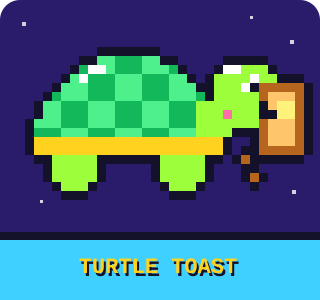

Help, even without the internet
This page is saved on your phone. It opens with no Wi-Fi and no data.
Calls and texts still work without the internet.
If a grown-up won't wake up
- Call 999.
- Ask for an ambulance.
- Say where you are.
- Stay on the phone. They will tell you what to do.
Remember
- It's never because of you.
- Fixing it isn't your job.
- All your feelings are OK.
- It's OK to tell someone safe, even if it's a secret.
- Don't touch pills, needles or bottles. Tell a safe grown-up.
If you feel scared right now
- Go to a safe spot, like your room or a friend's house.
- Breathe in slowly while you count to 4. Breathe out while you count to 4. Do it 5 times.
- Message someone you trust.